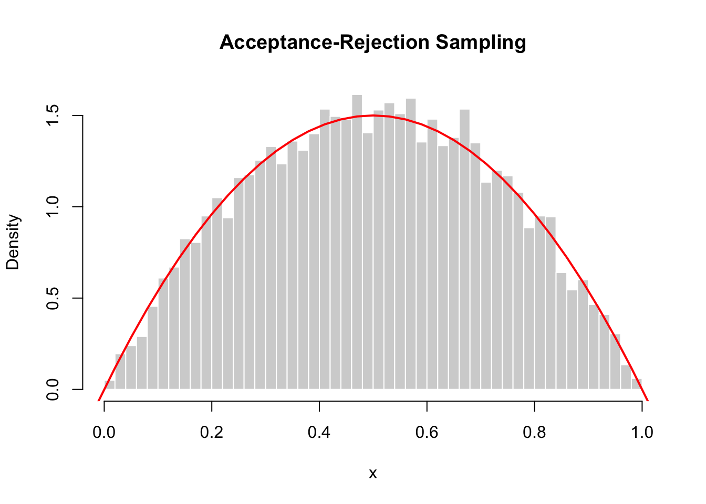

A mobile game awards players with different types of rewards when a treasure chest is opened. The reward type follows the probability distribution below.
Reward Type \(x\)
Coins
Gems
Energy
Rare Item
\(P(X=x)\)
0.50
0.25
0.15
0.10
Construct the cumulative distribution function (CDF) for this random variable and present it in a table.
# Define outcomes and probabilitiesx <-c("Coins", "Gems", "Energy", "Rare Item")p <-c(0.50, 0.25, 0.15, 0.10)# Check probabilities sum to 1sum(p)
[1] 1
# Construct cumulative probabilitiesF <-cumsum(p)# Create table for PMF and CDFdata.frame(outcome = x,p = p,F = F)
outcome p F
1 Coins 0.50 0.50
2 Gems 0.25 0.75
3 Energy 0.15 0.90
4 Rare Item 0.10 1.00
Intervals for the precision method
From the cumulative probabilities,
Coins: \(0 < U \le 0.50\)
Gems: \(0.50 < U \le 0.75\)
Energy: 0\(.75 < U \le 0.90\)
Rare Item: \(0.90 < U \le 1.00\)
So the rule is
\[
X =
\begin{cases}
\text{Coins} & \text{if } 0 < U \le 0.50 \\
\text{Gems} & \text{if } 0.50 < U \le 0.75 \\
\text{Energy} & \text{if } 0.75 < U \le 0.90 \\
\text{Rare Item} & \text{if } 0.90 < U \le 1.00
\end{cases}
\]
# Show intervals in a tablelower <-c(0, F[-length(F)]) # F[-length(F)] excludes the last item in Fupper <- Fdata.frame(outcome = x,lower = lower,upper = upper)
u_given <-c(0.12, 0.63, 0.44, 0.91, 0.27)# Find the first cumulative probability >= uresult_given <- x[sapply(u_given, function(u) which(u <= F)[1])]# sapply(u_given, function(u) ...) applies a function to every element of u_given# which(u <= F) checks which CDF are >= u and returns the positions of TRUE# (u <= F)[1] takes the first index.data.frame(u = u_given,reward = result_given)
The empirical probabilities should be close to the theoretical probabilities, though not exactly equal, because the simulation uses a finite number of draws. With 10,000 replications, the discrepancies are usually small.
Why can the precision method be inefficient for large k?
A simple implementation checks the cumulative probabilities one by one until it finds the correct interval. When the number of outcomes k is large, this search can become slow, especially if repeated many times. More efficient methods or built-in algorithms are often preferred for large discrete distributions.
Optional: more compact R version using findInterval()
samples2
Coins Energy Gems Rare Item
0.5059 0.1490 0.2506 0.0945
One small note: because findInterval() uses interval boundaries differently, the indexing needs care. The earlier which(u <= F)[1] version is the clearest way to the precision method.
Note
The precision method is essentially the discrete version of the inverse CDF method.
Exercise 2: Load on a bridge (CD 2014)
Consider the pdf for the random variable \(X\) which is the magnitude (in newtons) of a dynamic load on a bridge, given as
\[
f(x)= \left(\frac{1}{8} + \frac{3}{8} x \right), \quad 0 \le x \le 2
\]
Write a program to simulate values from this distribution using the inverse cdf method. Calculate the mean and variance and compare with the exact results.
Step 1. Firstly, we need to find the cdf \(F(x).\)\[
\begin{aligned}
F(x) &= \int_0^x f(t)\, dt \\
&= \int_0^x \left(\frac{1}{8} + \frac{3}{8} t \right)\,dt \\
F(x) &= \frac{x}{8} + \frac{3x^2}{16}
\end{aligned}
\]
The simulated distribution closely matches the theoretical probability density function, as shown by the histogram and overlaid curve Additionally, the empirical mean and variance from the simulated data are very close to the exact values \(E(X)=\frac{5}{4}\) and \(\mathrm{Var}(X)=\frac{13}{48}\), confirming that the simulation is accurate.
Exercise 3: Simulating the distribution of waiting time - Transportation
The article “A Model of Pedestrians’ Waiting Times for Street Crossings at Signalised Intersections” (Transportation Research, 2013: 17–28) suggested that under some circumstances the distribution of waiting time \(X\) could be modeled with the following pdf:
Write a function to simulate values from this distribution, implementing the inverse cdf method. Your function should have three inputs: the desired number of simulated values \(n\) and values for the two parameters for \(\theta\) and \(\tau.\)
Use your function in part (a) to simulate 10,000 values from this wait time distribution with \(\theta=4\) and \(\tau=80.\) Estimate \(E(X)\) under these parameter settings.
set.seed(1234)x <-waittime(10000,4,80)mean(x)
[1] 15.95958
var(x)
[1] 167.5203
How close is your estimate to the correct value of the exact \(E(X)=16\) and \(\mathrm{Var}(X)=170.67\)?
The empirical mean and variance from the simulated data are very close to the exact mean and variance, confirming that the simulation is accurate.
Part 2: Acceptance-Rejection Sampling
Exercise 4: Simulating Beta(2,2) distribution using Uniform distribution (Templ 2016)
Describe the steps. Hints: The pdf of \(Beta(\alpha,\beta)\) is \[
f(x)= \frac{\Gamma(\alpha+\beta)}{\Gamma(\alpha)\Gamma(\beta)} x^{\alpha-1}(1-x)^{\beta-1}, \quad 0 \le x \le 1
\]
The aim is to simulate \(n\) values from a Beta(2,2) distribution with pdf such that by substituting \(\alpha=2, \beta=2\) in the above, we have \[
f(x)= 6x(1-x), \quad 0 \le x \le 1.
\]
Let \(g(x)\) be Uniform(0,1) such that \[
g(x)= 1, \quad 0 \le x \le 1.
\]
and the ratio \(f/g\) is bounded, i.e., there exists a constant \(M\) such that \[
\frac{f(x)}{g(x)} = 6x(1-x) \le M, \quad \forall x.
\]
\[
\frac{d}{dx}6x(1-x) = 6 - 12x = 0
\]
In this case, the function is maximised at \(x=0.5, f(x)=1.5\) so that we choose \(M = 1.5.\)
Therefore, the general rule is
\[
U \leq \frac{f(Y)}{Mg(Y)} = \frac{6y(1-y)}{1.5(1)} = 4y(1-y)
\]
Proceed as follows:
Generate \(Y \sim g \sim \text{Uniform}(0,1).\)
Generate a standard uniform variate, \(U \sim \text{Uniform}(0,1).\)
If \(u\le 4y(1-y),\) then assign \(x=y\) (i.e., “accept” the candidate). Otherwise, discard or reject \(y\) and return to step 1.
These steps are repeated until \(n\) candidate values have been accepted.
The resulting accepted values \(x_1, . . ., x_n\) form a simulation of a random variable with the original pdf, \(f(x).\)
Check visually the plots of \(f(x)\) and \(Mg(x).\)
Perform Accept-Reject method to simulate Beta(2,2) distribution from Uniform distribution. Calculate the acceptance rate. Plot the simulating values of a Beta(2,2) using the accep rejection approach.
set.seed(1234)n <-10000x <-numeric(0) # store accepted sampleswhile(length(x) < n){ # keep sampling until we have n accepted values m <- n -length(x) # only generate what you still need y <-runif(m) # proposal sample Y ~ g(x) ~ Uniform(0, 1) u <-runif(m) # U ~ Uniform(0,1) for acceptance test accept <- u <=4* y * (1- y) # acceptance rule (returns TRUE/FALSE) x <-c(x, y[accept]) # keep accepted y}x <- x[1:n] # trim to exactly n sampleshist(x, prob =TRUE, breaks =40,col ="lightgray", border ="white",main ="Acceptance-Rejection Sampling",xlab ="x")curve(6*x*(1-x), from =-1, to =2,add =TRUE, col ="red", lwd =2)

Exercise 5: Simulating the half-normal distribution using Exponential
The half-normal distribution is defined as:
\[f(x) = \sqrt{\frac{2}{\pi}} \exp (-\frac{x^2}{2}), \quad x \ge 0.\]
Consider simulating values from this distribution using the accept–reject method with a candidate distribution of an Exponential random variable with parameter \(\lambda = 1\)
\[g(x)= e^{-x}, \quad x \ge 0.\]
Find the inverse cdf corresponding to \(g(x).\)
If \(X \sim Exp(\lambda=1)\) then the pdf and cdf are \[
g(x)= e^{-x}, \quad G(x)= 1- e^{-x}.
\]
On the average, how many candidate values will be required to generate 10,000 “accepted” values?
M =sqrt(2*exp(1)/pi); M
[1] 1.315489
The expected number of candidate values required to generate a single accepted value is \(M,\) so the expected number required to generate 10,000 x-values is \(10,000M \approx 13,155.\)
Write a program to construct 10,000 values from a half-normal distribution.
set.seed(1234)n <-10000M <-sqrt(2*exp(1)/pi)x <-numeric(0) # store accepted sampleswhile(length(x) < n){ # keep sampling until we have n accepted values m <- n -length(x) # only generate what you still need y <-rexp(m, rate=1) # proposal sample Y ~ g(x) u <-runif(m) # U ~ Uniform(0,1) for acceptance test fg_ratio <-sqrt(2/ pi) *exp(-y^2/2+ y) accept <- u <= fg_ratio / M # acceptance rule (returns TRUE/FALSE) x <-c(x, y[accept]) # keep accepted y}x <- x[1:n] # trim to exactly n sampleshist(x, prob =TRUE, breaks =40,col ="lightgray", border ="white",main ="Acceptance-Rejection Sampling",xlab ="x")curve(sqrt(2/ pi) *exp(-x**2/2), from =0, to =4,add =TRUE, col ="red", lwd =2)